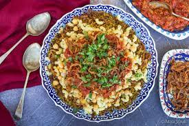
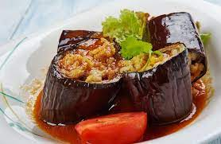

- Koshari
- Mashi

Koshary or koshari is one of the most traditional Egyptian foods, if not it’s national dish. It is popularly found on the streets of Egypt served from carts and restaurants that serve the dish exclusively. It’s a filling meal that’s really inexpensive – a total carb bomb! Koshari comes from an Indian dish of lentils and rice cooked by the British settlers in Egypt back in the 1800s. The Italians first added pasta to the dish, then the Egyptians added tomato sauce and fried onions. It is an interesting mix, but surprisingly delicious. A layering of rice, macaroni, lentils, and chickpeas topped off with caramelized onions, thick red sauce, and a garlic/chili/vinegar/ sauce. Locals often prefer it with some lemon juice. Koshari is normally eaten in dedicated koshari.

This national, inexpensive dish is essentially vegetables stuffed with rice mixture. It’s very popular across the middle east but different countries have
different recipes and variation of the dish. Mahshi is very popular in Egyptian homes and usually served on occasions or when having guests over as it’s
one of the common meals to be cooked for visitors. This dish is mainly served along with Molokhia (another national Egyptian dish). And it’s definitely
a great meal and cheap for anyone to have it.
The vegetables of choice can include eggplants, zucchini, tomatoes, bell peppers, grapevine leaves, or cabbage leaves. The filling is made with rice, cilantro,
dill, parsley, tomato sauce with seasoning, and a bit of cinnamon. It’s a delicious vegetarian meal. However, there’s a meat version where minced meat is added
to the filling. The preparation process is a bit slow because it requires removing most of the vegetables’ core and carefully stuffing them with the previously
prepared filling.